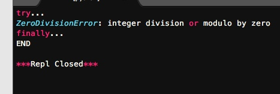
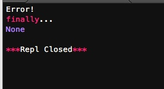
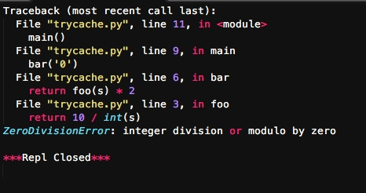
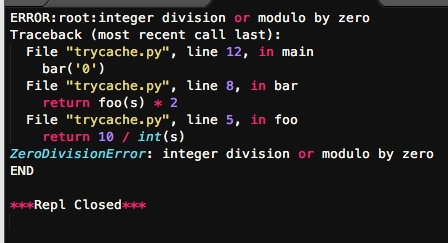
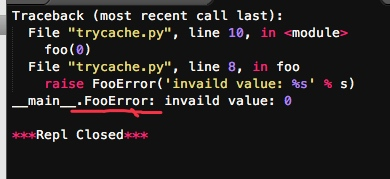
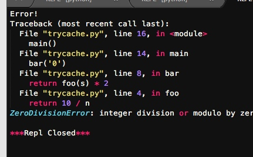

Python内置了一套异常处理机制，来帮助我们进行错误处理。
此外，我们也需要跟踪程序的执行，查看变量的值是否正确，这个过程称为调试。Python的pdb可以让我们以单步方式执行代码。
最后，编写测试也很重要。有了良好的测试，就可以在程序修改后反复运行，确保程序输出符合我们编写的测试。
错误处理
在程序运行的过程中，如果发生了错误，可以事先约定返回一个错误代码，这样，就可以知道是否有错，以及出错的原因。在操作系统提供的调用中，返回错误码非常常见。比如打开文件的函数open()，成功时返回文件描述符（就是一个整数），出错时返回-1。
用错误码来表示是否出错十分不便，因为函数本身应该返回的正常结果和错误码混在一起，造成调用者必须用大量的代码来判断是否出错。
所以高级语言通常都内置了一套try...except...finally...的错误处理机制，Python也不例外。
try
当我们认为某些代码可能会出错时，就可以用try来运行这段代码，如果执行出错，则后续代码不会继续执行，而是直接跳转至错误处理代码，即except语句块，执行完except后，如果有finally语句块，则执行finally语句块，至此，执行完毕。
#-*- coding: utf-8 -*-
try:
print 'try...'
r = 10 / 0
print 'result:', r
except ZeroDivisionError, e:
print 'except:', e
finally:
print 'finally...'
print 'END'

从输出可以看到，当错误发生时，后续语句print 'result:', r不会被执行，except由于捕获到ZeroDivisionError，因此被执行。最后，finally语句被执行。然后，程序继续按照流程往下走。
你还可以猜测，错误应该有很多种类，如果发生了不同类型的错误，应该由不同的except语句块处理。没错，可以有多个except来捕获不同类型的错误：
#-*- coding: utf-8 -*-
try:
print 'try...'
r = 10 / int(0)
print 'result:', r
except ValueError as e:
print 'ValueError:',e
except ZeroDivisionError as e:
print 'ZeroDivisionError:', e
else:
print 'no error'
finally:
print 'finally...'
print 'END'

Python的错误其实也是class，所有的错误类型都继承自BaseException，所以在使用except时需要注意的是，它不但捕获该类型的错误，还把其子类也“一网打尽”。比如：
try:
foo()
except StandardError, e:
print 'StandardError'
except ValueError, e:
print 'ValueError'
第二个except永远也捕获不到ValueError，因为ValueError是StandardError的子类，如果有，也被第一个except给捕获了。
Python所有的错误都是从BaseException类派生的，常见的错误类型和继承关系看这里：

使用try...except捕获错误还有一个巨大的好处，就是可以跨越多层调用，比如函数main()调用bar()，bar()调用foo()，结果foo()出错了，这时，只要main()捕获到了，就可以处理：
def foo(s):
return 10 / int(s)
def bar(s):
return foo(s) * 2
def main():
try:
bar('0')
except StandardError, e:
print 'Error!'
finally:
print 'finally...'
print main()

也就是说，不需要在每个可能出错的地方去捕获错误，只要在合适的层次去捕获错误就可以了。这样一来，就大大减少了写try...except...finally的麻烦。
调用堆栈
如果错误没有被捕获，它就会一直往上抛，最后被Python解释器捕获，打印一个错误信息，然后程序退出：
#-*- coding: utf-8 -*-
def foo(s):
return 10 / int(s)
def bar(s):
return foo(s) * 2
def main():
bar('0')
main()

出错并不可怕，可怕的是不知道哪里出错了。解读错误信息是定位错误的关键。我们从上往下可以看到整个错误的调用函数链。
从上往下依次查看错误。
记录错误
如果不捕获错误，自然可以让Python解释器来打印出错误堆栈，但程序也被结束了。既然我们能捕获错误，就可以把错误堆栈打印出来，然后分析错误原因，同时，让程序继续执行下去。
Python内置的logging模块可以非常容易地记录错误信息：
#-*- coding: utf-8 -*-
import logging
def foo(s):
return 10 / int(s)
def bar(s):
return foo(s) * 2
def main():
try:
bar('0')
except StandardError as e:
logging.exception(e)
else:
pass
finally:
pass
main()
print 'END'
同样是出错，但程序打印完错误信息后会继续执行，并正常退出：

最后打印出了“END”
通过配置，logging还可以把错误记录到日志文件里，方便事后排查。
抛出错误
因为错误是class，捕获一个错误就是捕获到该class的一个实例。因此，错误并不是凭空产生的，而是有意创建并抛出的。Python的内置函数会抛出很多类型的错误，我们自己编写的函数也可以抛出错误。
如果要抛出错误，首先根据需要，可以定义一个错误的class，选择好继承关系，然后，用raise语句抛出一个错误的实例
#-*- coding: utf-8 -*-
class FooError(StandardError):
pass
def foo(s):
n = int(s)
if n == 0:
raise FooError('invaild value: %s' % s)
return 10/0
foo(0)

只有在必要的时候才定义我们自己的错误类型。如果可以选择Python已有的内置的错误类型（比如ValueError，TypeError），尽量使用Python内置的错误类型。
最后，我们来看另一种错误处理的方式：
#-*- coding: utf-8 -*-
def foo(s):
n = int(s)
return 10 / n
def bar(s):
try:
return foo(s) * 2
except StandardError, e:
print 'Error!'
raise
def main():
bar('0')
main()

在bar()函数中，我们明明已经捕获了错误，但是，打印一个Error!后，又把错误通过raise语句抛出去了，这不有病么？
其实这种错误处理方式不但没病，而且相当常见。捕获错误目的只是记录一下，便于后续追踪。但是，由于当前函数不知道应该怎么处理该错误，所以，最恰当的方式是继续往上抛，让顶层调用者去处理。
raise语句如果不带参数，就会把当前错误原样抛出。此外，在except中raise一个Error，还可以把一种类型的错误转化成另一种类型：
try:
10 / 0
except ZeroDivisionError:
raise ValueError('input error!')
只要是合理的转换逻辑就可以，但是，决不应该把一个IOError转换成毫不相干的ValueError